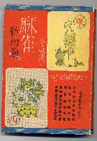
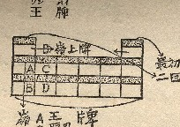

第１次麻雀ブームの昭和５年８月、春江堂から出版された入門書。文庫サイズであるが、厚さ２センチほどと結構ボリュームがある。ごく普通の入門書であるが発行部数が少なかったため、現在では入手が困難な本となっている。
著者は、菊池清隆という人。
昭和５年５月に、日華麻雀争覇戦というイベントが行われた。その模様は「日華麻雀争覇戦（杉浦末郎/大阪屋号書店/昭和５年10月）」に詳しい。しかし昭和５年８月に出版されたこの「麻雀新知識」には、すでにその対局の一部が収録されている。そこで著者は当時の麻雀団体の幹部であろうと思われるが不詳である。
現在は配牌が始まると、嶺上牌(リンシャンパイ)を下に降ろす。しかし昔は王牌の上に重ねた（見た感じが山の嶺のようなので、嶺上牌と表現した）。そんな昔のやり方（当時はそれが普通）が丁寧に解説されている。

しかし麻雀学的な見地からは、入門書としての本文より付録に価値がある。当時、麻雀牌は非常に高価。そんな高価な麻雀牌を販売するには税務署の許可が必要だった。※無許可で販売すると、50円以上、300円以下の罰金が科せられた。
そこで付録には税務署への許可申請書、身分証明書の書式が。また雀荘を開店するには警察の許可も必要なので、警察への申請書も掲載されている。さらに麻雀関係法規として、当時の骨牌税法や輸入牌のための保税倉庫法まで掲載されている。いずれも当時の状況を知る貴重な資料となっている。
|